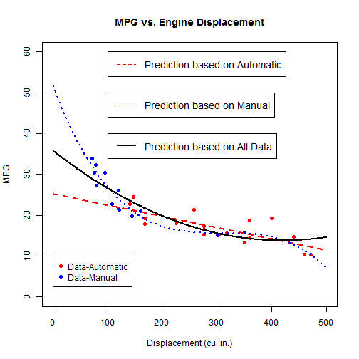

The app revisits the mtcars data set where the user can find the predicted values of MPG for a given engine displacement in cubic inches.
The predictions are based on three possible models based on subsets of the data and the entire data set.
mfb
The app revisits the mtcars data set where the user can find the predicted values of MPG for a given engine displacement in cubic inches.
The predictions are based on three possible models based on subsets of the data and the entire data set.
The mtcars data set contains 32 observations for 1973-74 models of cars from Motor Trend magazine. The fuel consumption (MPG = miles/gallon) along with 10 other variables are part of this data set.
Many variables can contribute to fuel consumption, but this app focuses only on transmission type. As a result, three prediction models are considered:

App identifies user defined point(s) on curve(s).